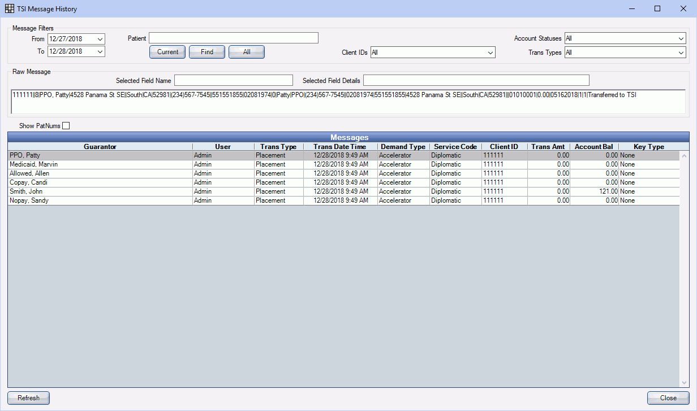

TSI History
Users can view a history of accounts sent to TSI.
In TSI Collections, click History.
Message Filters:
- From / To: Select the date range to view history.
- Patient: History shows for the selected patient. Leave blank to show all.
- Current / Find / All: Select the current patient, find a different patient, or select all patients to view history.
- Client IDs: Use the dropdown to filter the history by Client ID type.
- Account Statuses: Use the dropdown to filter the history by Account Status.
- Trans Types: Use the dropdown to filter the history by Transaction Type.
Raw Message: Use the raw message to understand the message history sent to TSI.
- Selected Field Name: Highlight part of the message history to view a field name.
- Selected Field Details: Highlight part of the message history to view field details.
Show Patnums: Check this box to include patient numbers in the history.
Click Refresh to update the history.
Click Close to go back to the TSI window.